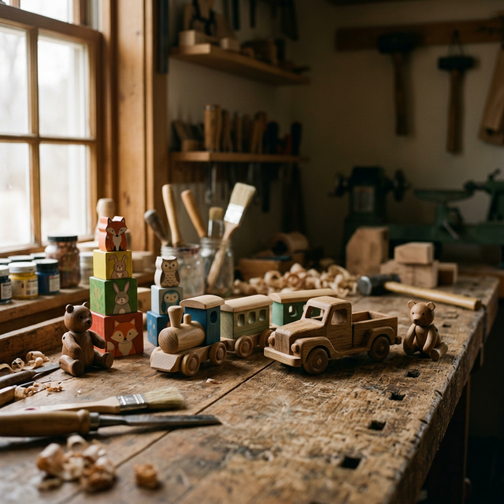
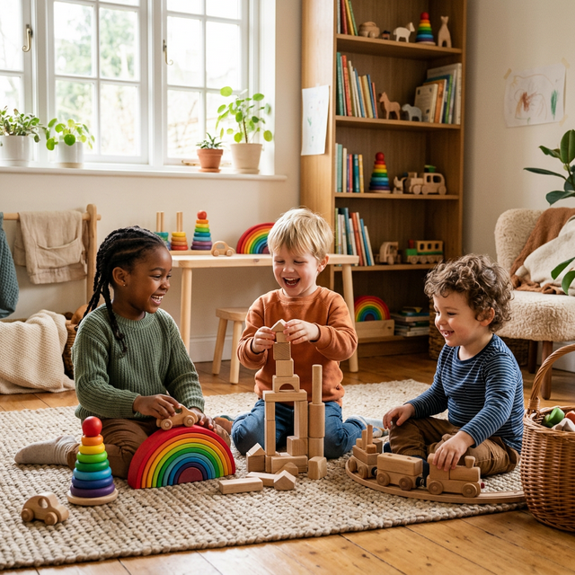
Nors parduotuvėse apstu plastikinių žaislų, mediniai gaminiai išlieka labai populiarūs dėl kelių priežasčių.
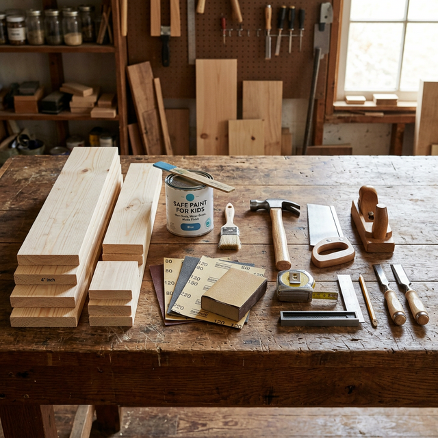
Medinių žaislų gamybai nereikia sudėtingos gamyklinės įrangos, tačiau būtinos tinkamos medžiagos.
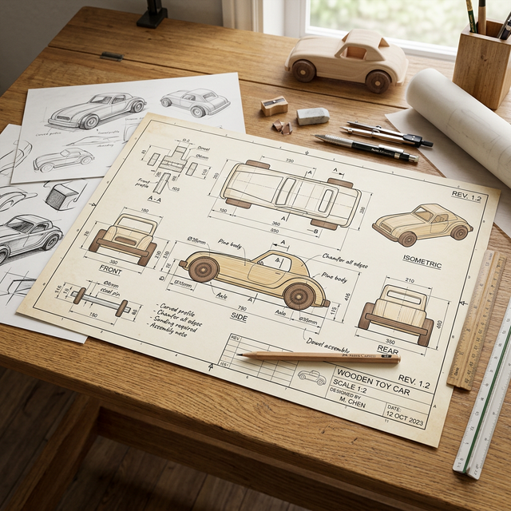
Gamybos procesas visada prasideda nuo aiškios idėjos, kurią svarbu apgalvoti ir nusibraižyti ant popieriaus.
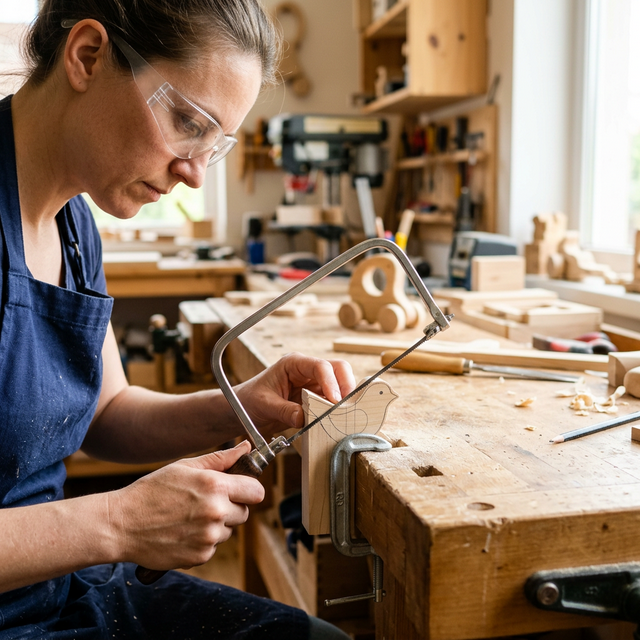
Pagal nupieštus kontūrus medienos dalys išpjaunamos. Šis procesas reikalauja didelio atidumo rankoms.
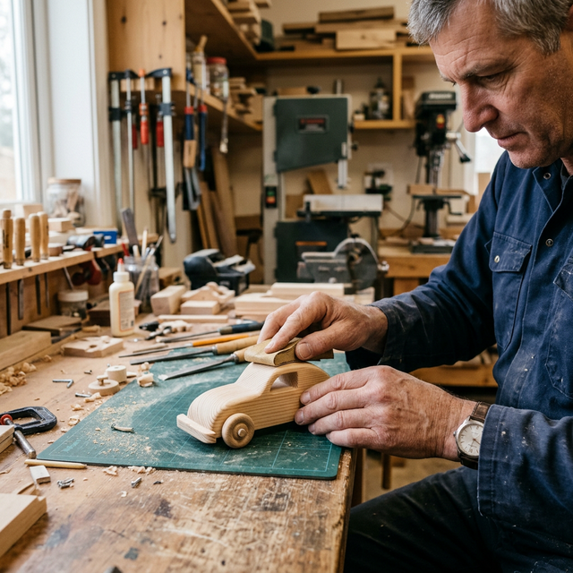
Išpjautos detalės dar nėra paruoštos – jų kraštai būna nelygūs. Jas būtina pirma nušlifuoti, ir tada ruošti jungimui.
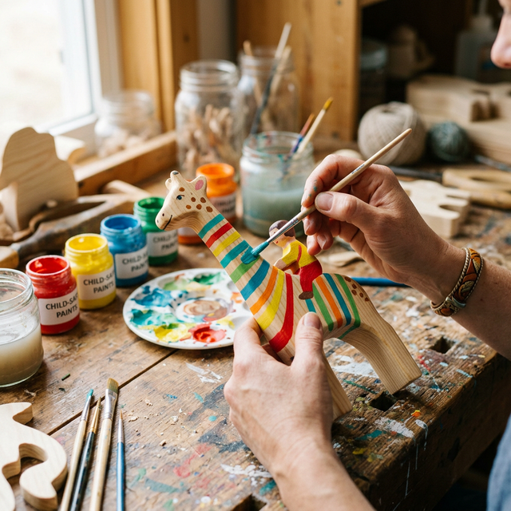
Kai žaislas tvirtai surinktas, o klijai išdžiūvę, pereinama prie kūrybingiausio etapo – žaislo spalvinimo.
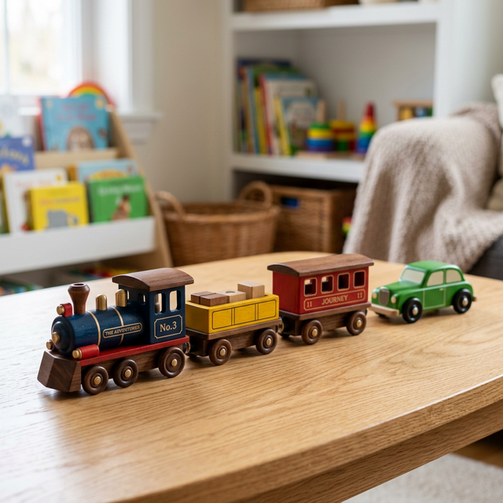
Pabaigus pjaustymo, šlifavimo, klijavimo ir dažymo etapus, mūsų lakuotas medinis žaislas yra visiškai paruoštas naudoti.
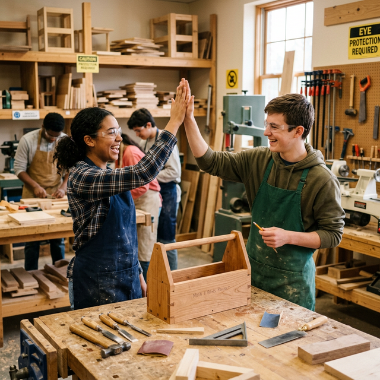
Gaminant nedidelius medinius žaislus tiesiog per pamoką, milžiniškų staklių neprireiks. Darbui pakanka šių trijų įrankių:
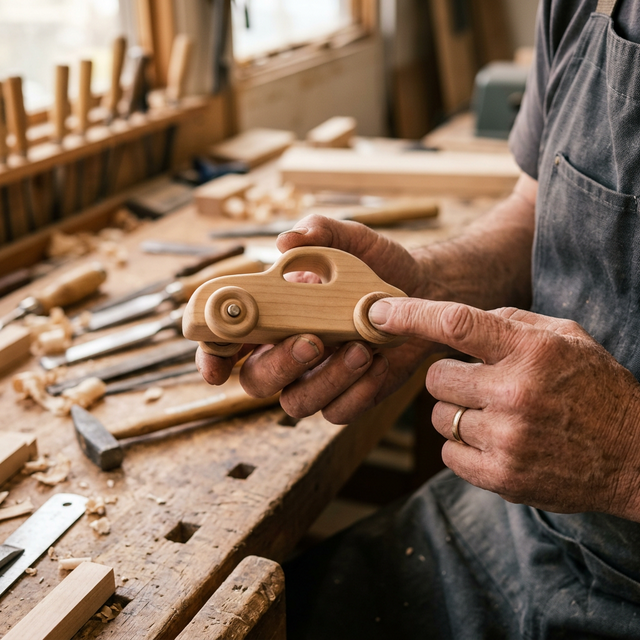
Prieš atiduodant pagamintą medžio žaislą naudoti, būtina jį atidžiai patikrinti iš visų pusių.
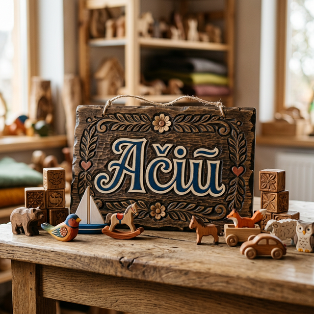